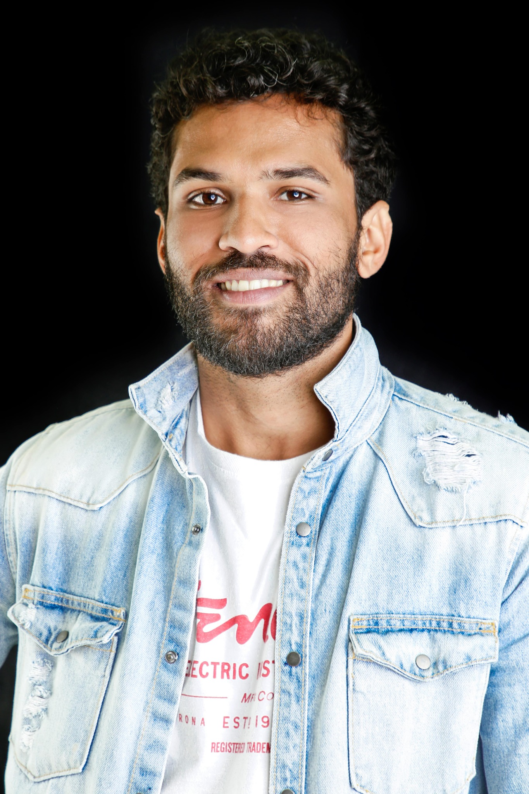

Portfólio oficial • Ator
RENAN
TARDELI
Ator brasileiro com trajetória em televisão, cinema, séries, curtas-metragens e teatro. Formação em interpretação e especialização para TV e Cinema.

Sobre
ATOR PARA AUDIOVISUAL E PALCO
Nascido em São Gonçalo, Rio de Janeiro, Renan Tardeli estudou teatro pela OST — Oficina Social de Teatro, em Niterói — e realizou especialização em TV e Cinema na CAL, com Andrea Avancini. Sua experiência reúne produções televisivas, séries independentes, curtas e montagens teatrais.
Seleção de trabalhos
AUDIOVISUAL
Reis — RecordHomem giteu, braço de Itai.
SingularidadeProtagonista • direção de Igor Vieira.
Suave e SecoProtagonista • curta-metragem dirigido por Mayara Vita.
ParapeitoCurta-metragem • direção de Mayara Vita.
HuntersParticipação em série gravada em São Paulo.
ContatoVoz no microfilme dirigido por Lorrana Flores.
Palco
TEATRO
Bunker Play
Texto e direção de José Geraldo Demézio, com Henrique Vieira.
Cruel
Direção de Amaury Lorenzo.
Esquizocênico
Direção de José Demézio.
Abutres da Rua 23
Direção de Erika Ferreira.
Formação
PREPARAÇÃO
OST — Oficina Social de Teatro
Formação teatral em Niterói, RJ.
CAL — TV e Cinema
Especialização em interpretação para TV e Cinema com Andrea Avancini.
Contato profissional
VAMOS
TRABALHAR?
E-mail
renan.tardeli@gmail.com
Telefone / WhatsApp
+55 (21) 98163-8201